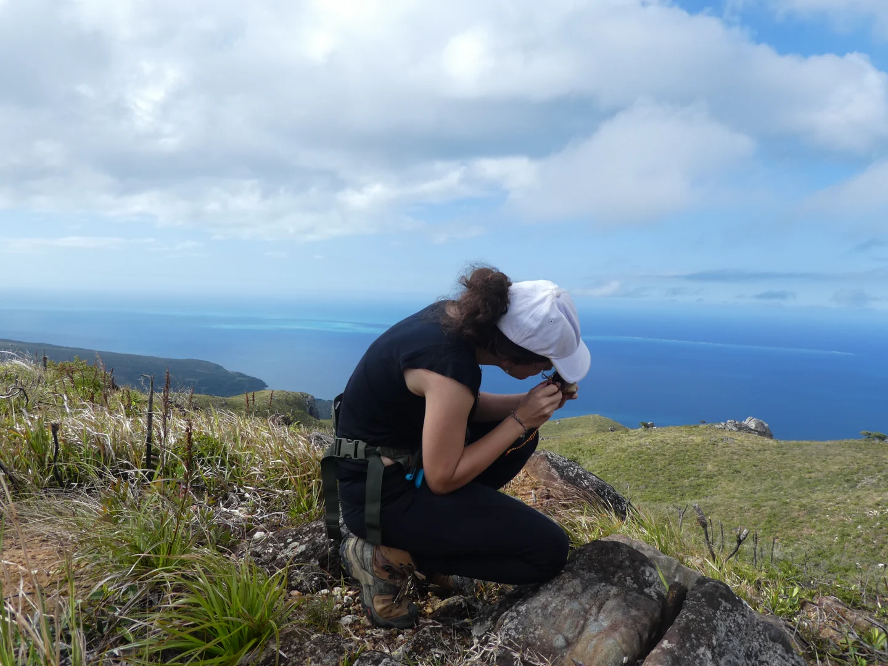
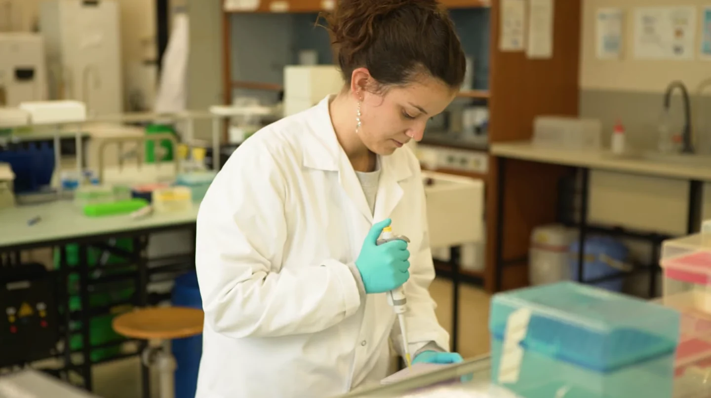
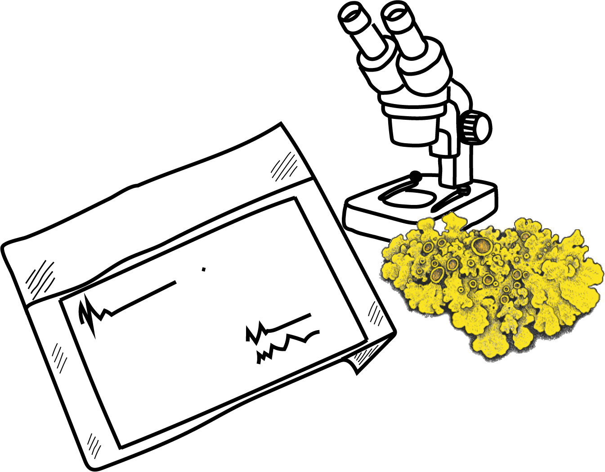
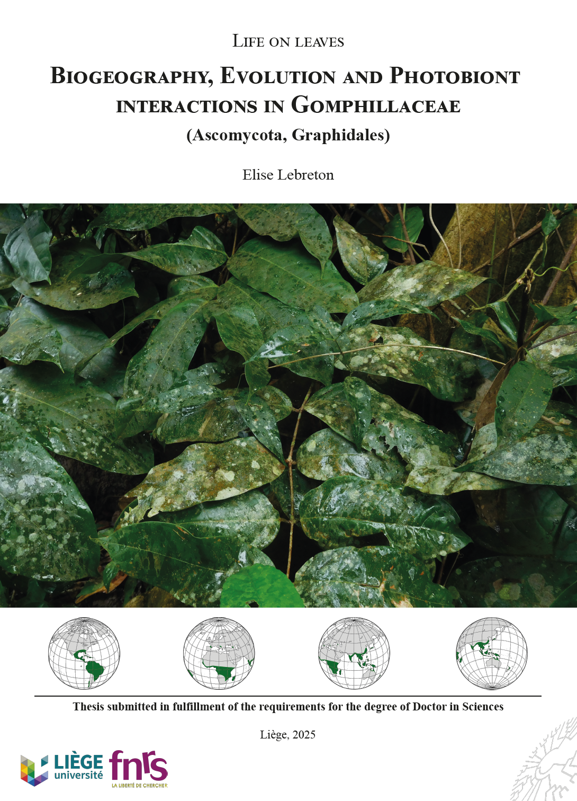

Fieldwork
Lichen inventories in tropical and temperate ecosystems.

Lichenologist

Scientific Collaborator, University of Liège, Belgium
Founder & Principal Investigator, LichenScope, France
About
I'm a lichenologist and evolutionary biologist interested in the processes shaping the diversification and global distribution of lichen-forming fungi. I combine tropical fieldwork, integrative taxonomy, molecular phylogenetics and research on natural history collections to investigate these processes.
My work also contributes to species inventories, curated biodiversity datasets and environmental biomonitoring.






Research & Expertise
From field inventories and herbarium collections to evolutionary research, conservation and bioindication
Lichen inventories in tropical and temperate ecosystems.

Species identification, historical specimens, collection curation.

Molecular phylogenetics, diversification analyses (including trait- models) and ancestral area reconstruction.

Datasets, species checklists, environmental biomonitoring, conservation pre-assessments (RedList).
Project development · Grant writing · Teaching & outreach
Distinctions
Awarded for outstanding doctoral research in lichenology, presented at major IAL meetings.
2026Triennial European prize recognizing original research in botany.
Both awarded for my PhD thesis Life on Leaves: Biogeography, Evolution and Photobiont Interactions in Gomphillaceae.

Latest
I'll be heading to French Guiana in April 2027 for a lichen inventory.
I'm back from the 10th International Lichenological Symposium in Trieste (Italy), where I was able to present my research thanks to an IAL mobility grant. On 30 July, I received the prestigious Mason Hale Award from the International Association for Lichenology for my doctoral research. A huge thank you to the IAL for its support!
With Robert Lücking — a nomenclatural landmark for the family. Read the paper ↗